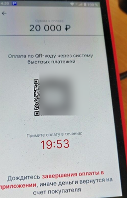
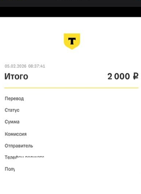
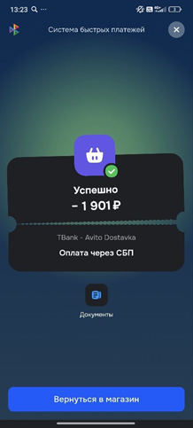
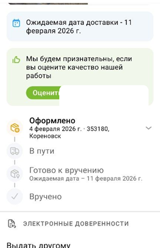

📚 Примеры и контрпримеры разметки
Примеры разметки по темам. В примерах из реальных чатов цитаты могут быть сокращены, но их смысл сохранен.
5.1. Организация сделки
ДОСТАВКА_ВНЕШНЯЯ
Согласовали отправку через Ozon Пример
Покупатель: «Если можно, отправкой озон пожалуйста)»
Продавец: «Да, хорошо. Пришлите адрес озон и номер телефона»
Согласовали отправку «Энергией» Пример
Покупатель: «ТК КИТ сможете отправить?»
Продавец: «Энергией удобно вам будет?»
Покупатель: «Хорошо, жду отправки.»
Продавец: «Ок, завтра отправлю.»
ДОСТАВКА_НАПРЯМУЮ
Предложение отправить СДЭКом по предоплате Пример
Покупатель: «Сдзк отправляете ?»
Продавец: «Конечно»
Продавец: «Но я отправляю после полной оплаты... адрес вашего сдэка... а вы мне переводите»
СДЭК с переводом продавцу Пример
Покупатель: «Доставка по предоплате СДЭКом допустима?»
Продавец: «Допустимо.»
Покупатель: «В качестве способа оплаты будет перевод по номеру телефона, да?»
Продавец: «Да.»
Обсуждение службы доставки само по себе не означает ДОСТАВКА_НАПРЯМУЮ Контрпример
Продавец: «Или СДЭК пункт рядом с домом у меня»
Продавец: «А если попробовать 5post?»
РЕКВИЗИТЫ_ВНЕ_АВИТО
Номер карты для оплаты товара Пример
Продавец: «[номер карты] <PERSON_NAME-#0> Сбербанк»
Продавец: «Чек после оплаты»
Платежные реквизиты прозвучали в звонке Пример
В звонке согласуют перевод за товар. Номер продиктован голосом, а не написан в чате.
Покупатель: «Давайте, я пишу.»
Продавец: «Записывайте: [телефон для перевода]. На Т-Банк.»
Покупатель: «Т-Банк, все, сейчас сделаю.»
Телефон только для доставки Пример
Продавец: «Введите, пожалуйста, свой номер телефона, нужно для курьера.»
Покупатель: «[контактный телефон].»
Реквизиты сами по себе еще не означают подтвержденный увод сделки Контрпример
Продавец: «Сбербанк: 2202 ...»
...
Продавец: «Давайте все-таки через Авито»
Продавец: «Заказ оформили, отправка товара в течении 3-х дней с момента оформления заказа (в установленный срок Авито)»
ГОТОВНОСТЬ_ПРОДАВЦА_ОТПРАВИТЬ_ВНЕ_АВИТО
Продавец готов отправить вне Авито, покупатель выбирает другое Пример
Продавец: «Могу отправить транспортной ПЭК после полной оплаты.»
Покупатель: «Давайте все-таки я через Авито Доставку куплю.»
5.2. Оплата и отправка
ОПЛАТА_ВНЕ_АВИТО
Короткие реплики без понятного платежного контекста Контрпример
Покупатель: «Готово»
Продавец: «Вижу, <PERSON_NAME-#1> ?»
Покупатель: «Да»
Перевод подтвержден обеими сторонами Пример
Покупатель: «Надо еще вам оплатить.»
Покупатель: «Перевел вам.»
Продавец: «Деньги пришли.»
Обещание перевести деньги Контрпример
Покупатель: «Как переведу, напишу, сколько и от кого.»
Продавец: «Хорошо.»
Оплата через Авито не считается оплатой вне Авито Контрпример
Покупатель: «Вот оплата»
... в подтверждении оплаты видно, что платеж относится к Avito Dostavka
ОТПРАВКА_ВНЕ_АВИТО
Посылка ожидает на почте Контрпример
Продавец: «Сегодня постараюсь отправить и отпишу»
Продавец: «[трек-номер] трек номер для отслеживания покупки»
Продавец: «Здравствуйте, покупка ожидает на почте»
Самовывоз и последующее использование товара Пример
Покупатель приезжает за компьютером. Позже он обсуждает с продавцом его работу дома.
Покупатель: «Скоро подойду.»
Продавец: «Ок.»
Покупатель: «Когда домой пришел, подключил. В игру заходил.»
Оплата и оформление еще не подтверждают отправку Контрпример
Стороны оформляют внешнюю доставку через Ozon.
Покупатель: «Пришло?»
Продавец: «Да, только еще надо доплатить.»
Продавец: «Посмотрите, появилось ли у вас что-то во вкладке Ozon Доставка.»
Продавец: «Если да, то завтра-послезавтра все отправлю.»
5.3. Корнеры и итоговое решение
Задаток за бронь товара не считается нарушением Контрпример
Покупатель: «Можно забронировать до 11.02?»
Продавец: «Если задаток внесете то да»
Покупатель: «Куда переводить?»
Продавец: «Фотик за вами»
Самовывоз без ответа продавца Пример
Покупатель спрашивает, когда можно посмотреть и забрать товар; продавец еще не ответил.
Такси и факт передачи проверяются отдельно Пример
Покупатель: «Сможете вынести, если просто такси закажу?»
Продавец: «Если в ближайшее время, то да.»
Продавец: «Передали.»
У одной покупки могут быть несколько реализованных корнеров Пример
Плашка КГТ у объявления = «Да». Покупатель вызывает машину для передачи товара.
Продавец: «Машина назначена?»
Покупатель: «Напишите, пожалуйста, как отдадите.»
Продавец: «Отдали.»
Плашка КГТ — «Нет», но крупногабаритность обсуждается Пример
В карточке плашка КГТ = «Нет». В разговоре о том же товаре участник прямо говорит, что это крупногабаритный шкаф. Оплата и физическая передача вне Авито не подтверждены.
Плашка КГТ — «Да» без обсуждения крупногабаритности Пример
У товара плашка КГТ = «Да». Крупногабаритность в переписке не обсуждают. Для покупки этого товара согласована отправка в ПВЗ OZON вне Авито и подтверждена оплата вне Авито; других оснований для корнера нет.
Обсуждали курьера, выбрали доставку в ПВЗ OZON Пример
Сначала стороны обсуждали передачу курьеру. Затем для этой же покупки согласовали отправку в ПВЗ OZON вне Авито и подтвердили перевод денег за товар вне Авито. Плашка КГТ — «Нет»; других оснований для корнера нет.
Обсуждали обмен, затем состоялась продажа Пример
Покупатель предложил обмен, продавец отказался. После этого стороны согласовали обычную продажу с доставкой вне Авито и подтвердили оплату вне Авито. Обмен не реализован; других оснований для корнера нет.
Занижение цены в Авито с доплатой на карту Пример
Покупатель: «Может лучше через авито?»
Продавец: «Ок, остаток сможете прислать на карту? Чтобы не платить комиссию»
Продавец: «Цену укажу 10р для оформления»
Низкая цена сама по себе не означает нарушение Контрпример
В объявлении или в оформлении указана низкая цена, но в переписке нет явной договоренности о переводе остатка суммы вне Авито.
Только возврат Контрпример
Покупатель: «Товар уже получил, но хочу вернуть».
Продавец просит реквизиты для возврата денег. Позже продавец пишет: «Возврат перевёл».
Других сведений о том, как была проведена первоначальная покупка, в карточке нет.
Возврат после подтвержденного увода Пример
До получения товара продавец передал реквизиты, покупатель подтвердил перевод, а продавец подтвердил отправку товара вне Авито. Позже покупатель сообщает, что возвращает товар, а продавец переводит деньги обратно.
5.4. Несколько объявлений и покупок
Продолжение сделки в другом чате Пример
D01, объявление о лампе: стороны договариваются отправить лампу через внешний ПВЗ.
D02, другое объявление: покупатель прямо пишет, что перешел сюда из первого чата, перевёл сумму за лампу; продавец подтверждает поступление.
Несвязанные покупки не складываются в один увод Контрпример
D01: согласована внешняя доставка лампы, но оплаты или отправки ещё нет.
D02: подтверждена оплата обуви, но нет договорённости проводить сделку с обувью вне Авито.
Подтвержденный увод по нескольким товарам Пример
D01: по лампе есть договоренность о внешней доставке и подтверждён перевод вне Авито.
D02: по обуви отдельно есть договоренность о прямой доставке и подтверждена отправка.
Один общий заказ из нескольких объявлений Пример
D01, объявление о платье: покупатель пишет «Вот эту хочу заказать».
D02, объявление о туфлях: покупатель пишет «И вот эти добавьте в заказ».
D03, чат без объявления: стороны договариваются отправить оба товара через внешний ПВЗ; покупатель сообщает, что перевел деньги за оба товара, продавец подтверждает получение.
КГТ другого товара не переносится Пример
D01: по обычному товару доказаны договоренность и оплата вне Авито.
D02: другой товар имеет положительный КГТ-флаг.
Для итога достаточно оплаты или отправки Пример
Часы и ключницу покупают одним заказом. Продавец передал телефон для оплаты. Плашки КГТ = «Нет»; подходящих корнеров в материалах этой покупки нет.
Покупатель: «Можете через Ozon отправить мне вместе с часами?»
Продавец: «Напишите, куда выслать, на какой Ozon.»
Покупатель: «Отправила. В СМС написала, чтобы узнали, от кого перевод.»
Продавец: «Хорошо, пришли.»
Одна покупка с корнером, другая с абьюзом Пример
В карточке две независимые покупки. По D01 согласована внешняя доставка и подтверждена оплата вне Авито, реализованных корнеров нет. По D02 другой товар уже забрали самовывозом.
5.5. Примеры по изображениям
Как трактовать изображения. Изображение оценивается только вместе с контекстом переписки, а не изолированно.
- если изображение содержит реквизиты для перевода, это может быть признаком РЕКВИЗИТЫ_ВНЕ_АВИТО;
- если изображение содержит подтверждение успешного перевода, это может быть признаком ОПЛАТА_ВНЕ_АВИТО;
- если изображение подтверждает прием физического товара перевозчиком, его движение или получение, это может быть признаком ОТПРАВКА_ВНЕ_АВИТО;
- один трек-номер, созданная накладная или статус «Оформлено» сами по себе недостаточны.
РЕКВИЗИТЫ_ВНЕ_АВИТО
QR-код для оплаты на изображении Пример
Продавец: «Qr действует 20 минут»

ОПЛАТА_ВНЕ_АВИТО
Квитанция со скрытым статусом платежа Контрпример
Покупатель отправляет квитанцию перевода после получения реквизитов.

Скриншот оплаты через Авито Контрпример
Покупатель: «Вот оплата»

ОТПРАВКА_ВНЕ_АВИТО
Оформление еще не подтверждает отправку Контрпример
Продавец: «[трек-номер] трек номер для отслеживания покупки»
